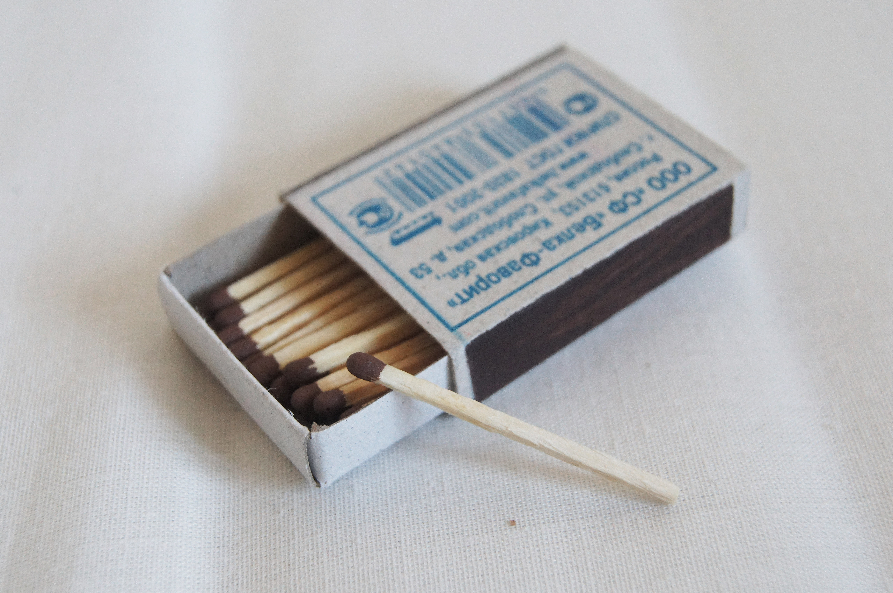

К счастью, в пятницу у меня выходной, поэтому я посвятила этот день просмотру сериала "Твин Пикс". Этот сериал занимает большую часть в моей жизни. Осенью я люблю пересматривать "Твин Пикс", для меня это уже традиция. В сериале есть персонаж БОБ — существо из Черного Вигвама, царства чистого зла, который вселяется в людей и совершает ужасные преступления. Так, одним из пострадавших от рук БОБа является Лиланд Палмер, в которого вселился этот дух. Сам Лиланд рассказывал, как в детстве БОБ бросал в него спичками, предлагая поиграть с огнём. "Огонь, иди со мной".
